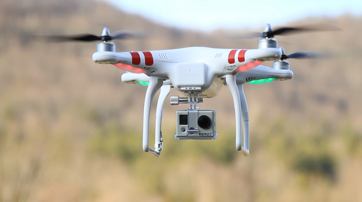

Els drones són robots voladors que s'enlairen sense cap tripulant a bord, controlat a distància, que sovient no arriben als dos quilos de pes, i encara que durant molt de temps haguem pensat que les feien servir només els militars per a missions bèl·liques, actualment aquest tipus de dispositius tenen també finalitats d'allò més cíviques.
Van néixer per a ús militar i ara s'estan desenvolupant per cobrir un ventall d'aplicacions a la vida civil.
La mida reduïda i la velocitat fan molt útils aquests aparells en els casos en què el temps és primordial a l’hora de salvar vides.
Funcionament
Poden funcionar de dos maneres, una mitjançant el dispositiu mòbil o tablet per a conrolar el drone i amb una càmera que porten a bord veure per on va i poder controlar-lo, i dos, amb un comandament a distància com els dels cotxes teledirigits, en moltes ocasions el comandament també te una pantalla per a poder veure el que veu el drone.
Un drone té majoritariament 4 hèlices (encara que n'hi han fins amb 6 hèlices) independents que poden anar més ràpides o més lentes, depenent del que vulguis fer.
Funcions i Prestacions
Els drones ens poden aportar poder fer una "ambulància" amb un drone que tingui capacitat per a transportar de forma ràpida quatre quilos de material mèdic com un desfribil·lador o dosis d'insulina.
Ens permet també poder cobrir molt de terreny en poc temps, això permetria vigilar manifestacions, veure com avança un foc o les destrosses que ha causat a la zona afectada.